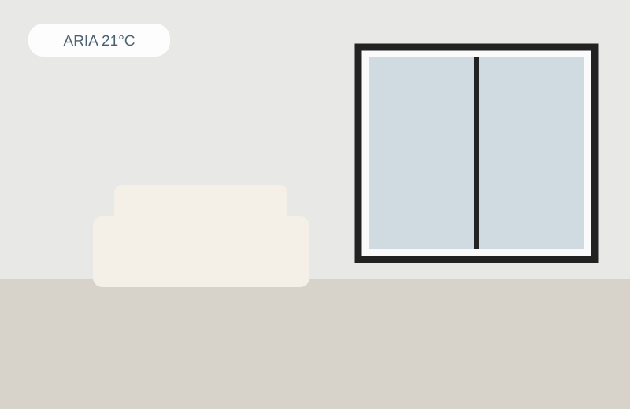
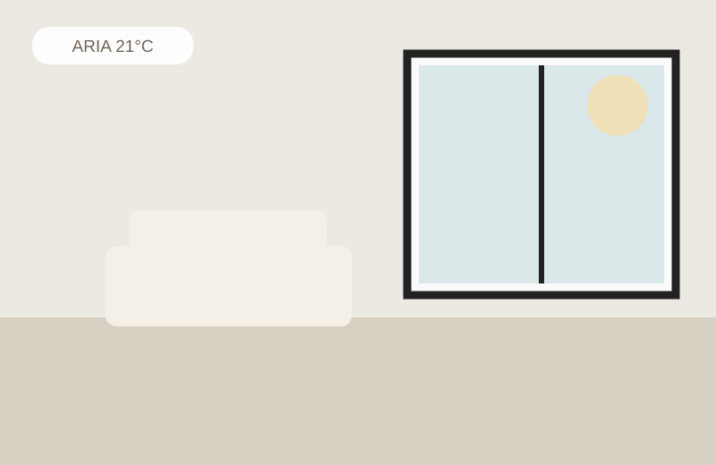
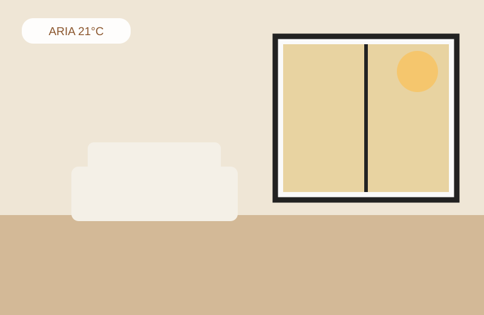
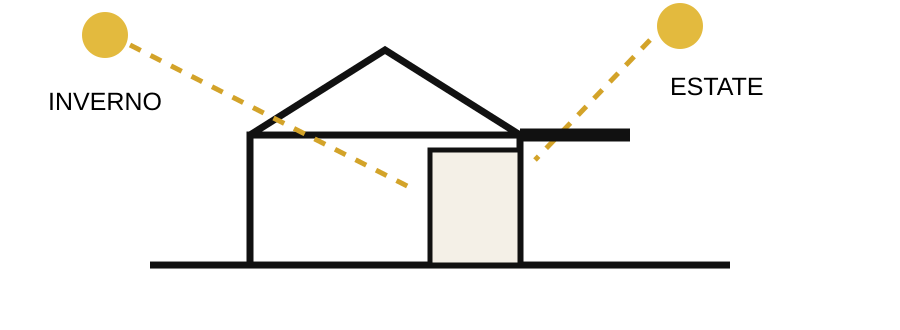
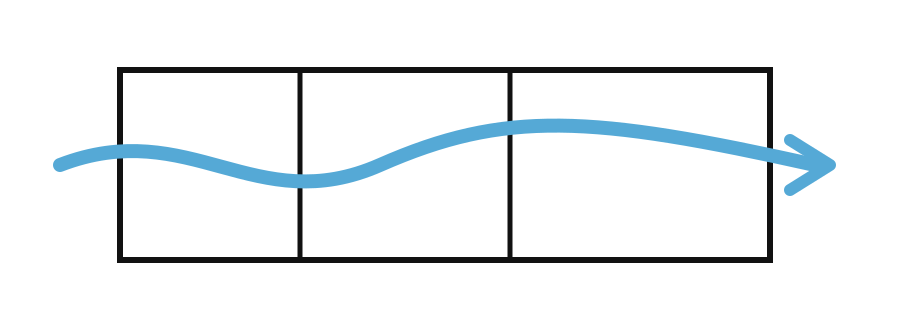

Due ambienti alla stessa temperatura possono farci stare in modo completamente diverso.
Il termometro non sbaglia, semplicemente non misura tutto quello che sentiamo.
Il comfort è una questione che riguarda l’aria che respiriamo, ma anche le superfici che ci circondano, la luce che entra, l’ombra che possiamo trovare, la possibilità di far muovere l’aria quando serve. Sono cose che possiamo progettare molto prima di pensare a un impianto.

Parete fredda, poca luce, sensazione di fresco.

Superfici equilibrate, luce diffusa, comfort.

Sole diretto, irraggiamento elevato, caldo.
Il muro accanto a noi conta quasi quanto l’aria.
Una parete fredda sottrae calore al nostro corpo. Con la stessa temperatura dell’aria possiamo sentire freddo o caldo a seconda di quanto le superfici che ci circondano sono vicine a noi.
Parete fredda 16°C
Le finestre sono aperture verso il paesaggio.
Ma sono anche superfici che, se non progettate, possono far entrare troppo freddo d’inverno e troppo calore d’estate.
Vetro esposto al sole 45°C
Il comfort estivo si progetta in inverno.
Orientamento, ombre, ventilazione notturna, massa termica, schermature: sono decisioni che prendiamo quando la casa esiste solo sulla carta.

Aprire una finestra.
La possibilità di creare ventilazione trasversale è una delle forme di comfort più semplici ed efficaci, soprattutto d’estate.

I materiali hanno una temperatura.
Legno, pietra, intonaco, ceramica: ognuno ha una capacità diversa di assorbire, conservare e restituire calore. Il corpo lo percepisce.
Forse il comfort è questo.
Una casa che ha bisogno dell’impianto il meno possibile per correggere se stessa.
Il comfort non è il numero che leggiamo sul termostato.
È quanto poco siamo costretti a pensarci quando siamo a casa.